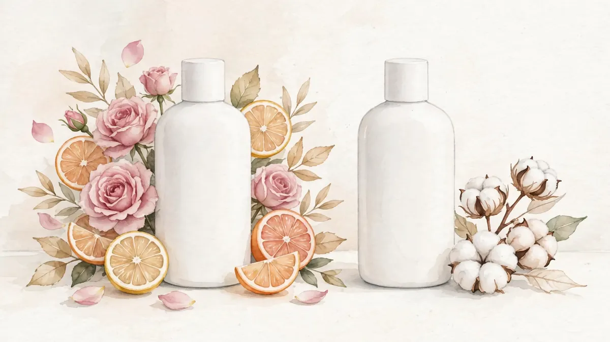

香りつき／無香料の選び分け

ボディクリームには、香りつきのものと無香料のものがあります。どちらが良いという話ではなく、使う場面によって向き不向きがあります。施術の現場でも、香りの扱いは大切な配慮のひとつです。この記事では、選び分けの考え方を整理します。
香りは「場面」で選ぶ
選び分けの軸は場面です。職場など人が近い距離で過ごす場面、食事の前後、就寝前、休日のリラックスしたい時間。香りの感じ方には個人差が大きいため、周囲への配慮が必要な場面では、無香料か、残りの弱い香りつきが無難です。逆に、自宅で過ごす休日などは、好きな香りを楽しむ時間にできます。
施術では、お客様の好みが分からない以上、香りは控えめが基本です。この「相手がいる場面では控えめに」という考え方は、日常の選び分けにもそのまま使えます。
残り方は、部位と量で変わる
同じアイテムでも、塗る部位と量で香りの残り方は変わります。首元や手首など、顔に近い部位は香りを感じやすく、脚などは感じにくくなります。香りを楽しみたい日は顔に近い部位に、控えたい日は遠い部位に、という調整もできます。
また、香りつきのアイテムを複数重ねると、香り同士が重なって印象が変わります。ボディクリームと香水、柔軟剤の香りなど、身の回りの香り全体で考えるのが、香り選びの基本です。
家族と共有するなら
家族で1本を共有する場合は、好みの分かれにくい無香料が扱いやすくなります。逆に、個人用として割り切るなら、香りつきを選ぶ楽しみがあります。「共有用は無香料、個人用は香りつき」という2本体制も、現実的な選択肢です。
香りの有無は、アイテムの良し悪しではなく、場面との相性の問題です。自分の生活の場面を思い浮かべて選ぶことが、失敗の少ない選び方になります。
香りの強さの確かめ方にも、コツがあります。店頭でフタを開けて嗅ぐだけでは、肌に塗って時間が経った後の印象までは分かりません。テスターがある場合は手の甲に少量を伸ばし、しばらく置いてからもう一度香りを確かめます。香りは時間とともに印象が変化するため、つけた直後と30分後では感じ方が違うことが多いのです。自宅で使う場面を想像しながら、「朝の支度の時間にこの香りはどうか」「寝る前にこの香りはどうか」と、場面に当てはめて判断するのが失敗の少ない選び方です。
香りの感じ方は、その日の体調や気分でも変わります。いつもは心地よい香りが強く感じられる日は、量を控えめにするなど、自分の感覚に合わせて調整することも、香りと付き合う工夫のひとつです。
まずは小さいサイズや試供品で、実際の生活の中で試すところから始めるのが安心です。
セラフィナ「香りの有無は、使う場面から逆算して選ぶといいね」

セラフィナ｜美容の道具箱の案内役
「量と表示が分かれば、美容は失敗しない。」——セラフィナと白猫のモコが、買う前のチェックポイントを案内します。綺麗になりたい気持ちに正直に、でも表示は冷静に読むのが、このサイトの約束です。